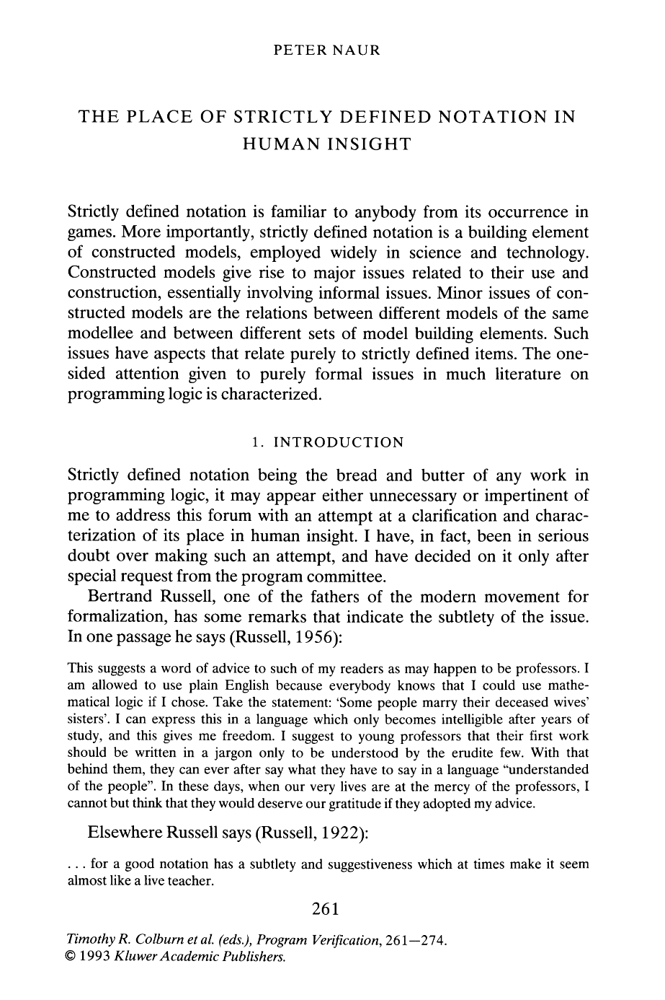

Programming languages
as a design problem
Tomas Petricek
University of Kent
tomas@tomasp.net | @tomaspetricek

Programming languages
As formal languages
Metaphor determines
what questions we ask
Syntax, semantics,
formal properties
Software engineering
Structured activity
Metaphor determines
questions we ask
Reliability, safety
Development process
Architecture and
urban planning
Design problem
Metaphor determines
what questions we ask
Dealing with complexity, evolution in time
Motivation
Is software like cities?
Kinds of complexity

Parnas on strategic defence
- Analog systems
- Repetitive digital systems
- Non-repetitive digital systems
Modelling via code and tests
- Problems of simplicity
- Unorganized complexity
- Organized complexity

Gradual development
Large computing systems are products of evolutio- nary development (...); they became reliable through a process of slow testing and adaptation to an operational environment
(Weizenbaum on SDI)
Christopher Alexander
Things that are good have a certain structure. You can't get that except dynamically.
In nature you've got continuous very-small-feedback-loop (...), which
is why things get to be harmonious.
Beautiful theories
Radiant garden city beautiful
- Le Corbusier's Ville Radieuse
- Garden Cities in the UK
- American City Beautiful
Programming languages
- Simplified formal models
- Object-oriented programming
- Agile development methodology
Methodologies
Learning from urban planning and architecture
1. What actually works
The case of cities
- Sidewalk life in Greenwich Village
- Unslumming in North End
- Why does it work?
The case of programming
- R and JavaScript languages
- No information hiding in MIDI
- Ethnography done in HCI
1. Peter Naur
It is curious how authors, who in the formal aspects of their work require painstaking demonstration and proof, in the informal aspects are satisfied with subjective claims that have not the slightest support, neither in argument nor in verifiable evidence.
The Place of Strictly Defined
Notation in Human Insight
2. How buildings evolve
[Almost all buildings are] designed not to adapt; also budgeted and financed not to, constructed not to, administered not to, maintained not to, regulated and taxed not to, even remodelled not to.
But all buildings (...) adapt anyway, however poorly, because the usages in and around them are changing constantly.
2. How software evolves

How software evolves?
- Separation of concerns
- Know all usages?
- Usages will change
Simondon's concretization
- Parts with clear functions
- Process of concretization
- Functions get intermixed

3. Navigating through a city
A pleasant city is legible
[A legible city is] one whose districts or landmarks or pathways are easily identifiable and are easily grouped into an overall pattern.
3. Navigating through a city

What makes city legible?
- Distinguishable districts
- Visible landmarks
- Paths and edges
What makes code legible?
- How people navigate?
- Path of program execution
- Linking definitions to usage
Ideas
Building software like cities
1. Adaptable software
Teaching good maintenance habits
New buildings teach bad maintenance habits
Once built, owners stop paying attention
Chaos engineering in cloud systems
Build parts that will have to be replaced soon?

1. Building materials
Tale of vinyl siding
Materials that look bad before they act bad
Problems with traditional materials are well understood
2. Vernacular design method

Unself-conscious design
- Christopher Alexander
- Musgum mud huts
- Develops by gradual adaptation
Self-conscious design
- Design to satisfy requirements
- Requires full understanding
- Keeps reinventing form

Vernacular design method
Can we build software without reinventing form?
Buying and reconfiguring existing systems?
3. Dealing with complexity
Jacobs on understanding cities
- to think about processes
- to work inductively
- to seek for 'unaverage' clues
Understanding software
- Non-reductionist view?
- Look at unexpected cases?
- Not proofs but illustrations?
Conclusions
Building software like cities

Programming as designing and intervening in complex systems that cannot be fully understood
Mathematical reductionism via statistics or logic cannot talk about all that matters
Conclusions
Programming languages as a design problem
-
Useful methodologies to follow
What actually works? How software evolves? -
Concrete ideas about planning
Design for adaptability? Avoid reinventing forms?
Tomas Petricek, University of Kent
tomas@tomasp.net | @tomaspetricek